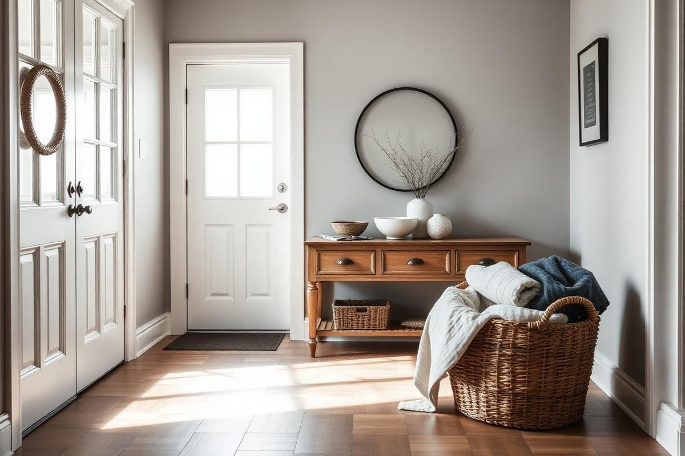
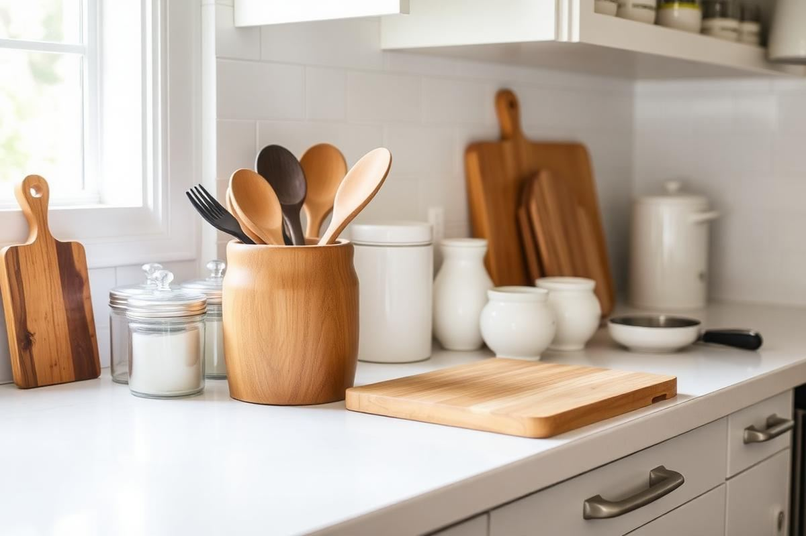

New Year Home Reset: A Room-by-Room Decor Refresh

Every January, the same thing happens. The tree goes out, the garlands come down, and the rooms that felt full and glowing in December suddenly look bare and slightly grey. The instinct is to buy something to fill the gap. The better move is a structured reset: take everything down, edit what is left, and put back only what earns its place, with a few small warmth adjustments to carry you through the darkest weeks of the year.
This is the plan I follow in my own home and recommend to clients. It takes one focused weekend, costs almost nothing if you shop your own cupboards, and it sets a baseline that makes the rest of the year's decorating easier.
Why January rooms feel flat
Holiday decorating adds three things at once: extra light sources, extra texture, and extra reflective surfaces. When all three disappear on the same afternoon, the room loses far more than a tree. Understanding that makes the fix obvious — you are not missing decorations, you are missing warm light, soft texture, and a bit of sparkle. Replace those three qualities in a quieter form and January rooms stop feeling like an absence.
Packing down the holidays properly
Do the pack-down in one session rather than over a fortnight, and edit as you go. Anything broken, tangled beyond saving, or unused for two consecutive years leaves the house now rather than being stored for another twelve months. Sort what remains by room rather than by type, label the boxes clearly, and put a short note inside the top box listing what you wished you had bought — next December's self will thank you.
- Wrap fragile ornaments in tissue and store in a rigid box, never a bag.
- Coil lights around a piece of stiff card and test them before storing, not after.
- Vacuum behind and under everything the tree and decorations covered.
- Keep one small box of neutral winter items — candles, throws, greenery — out for January.
Living room reset
Start by clearing every horizontal surface completely. An empty coffee table and empty shelves let you see the room's actual proportions again. Then put back in this order: the largest anchor object first, then a light source, then something living, then one personal piece. Stop there. Most living rooms are styled at about 130 per cent capacity by the end of December and feel dramatically better at 70.
Swap the seasonal red and green textiles for something tonal and textural — cream boucle, oatmeal wool, a heavy knit throw. Rotate the cushions you already own rather than buying new; a room with six cushions can run three completely different looks across a year if you store the off-season set flat in a drawer.

Bedroom reset
The bedroom benefits most from this weekend, because it is the room that quietly absorbs clutter over the holidays. Strip the bed completely, wash everything including the mattress protector, and rotate the mattress while it is bare. Launder or air the duvet if you have not this season. Then remake the bed with your heaviest, softest layers, since January is the month those earn their keep.
- Clear both bedside tables to three objects each: light, book, small dish.
- Empty the drawer that has become the miscellaneous drawer. Every bedroom has one.
- Move any laundry chair contents into the wardrobe or the wash, then move the chair.
- Check bulbs are warm white, 2700K or lower, and swap any cool-toned ones out.
Kitchen and dining reset
Kitchens end December full of things that arrived for one meal and never left. Work through the counters first, returning appliances to cupboards unless they are used more than twice a week. Then the fridge, then the pantry, checking dates and grouping what remains into zones — baking, breakfast, tins — so the shelf you reach for daily is the one at eye level.
On the dining table, remove everything and put back a single low arrangement. Bare branches, a bowl of citrus, or three candlesticks in different heights all work in January, and all cost either nothing or very little. Keep it low enough to see over, which means under 30 cm.
Entryway and hallway
The entry sets the tone for how the whole house feels when you walk in, and in January it is usually carrying wet boots, spare gift bags, and a wreath hook. Clear it entirely, wash the floor, and put back only what is needed for this season: a boot tray, hooks with space to spare, a basket for gloves and scarves, and a mirror. Leaving 30 per cent of the hooks empty is what stops an entry looking overwhelmed by February.
Light, scent, and sound
This is the part people skip, and it is the part that fixes the flatness. Add a third light source to every room you use in the evening, at low level — a table lamp, a floor lamp, or a small rechargeable lamp on a shelf. Warm bulbs at 2700K, on a plug timer that comes on before dusk, will do more for how January feels than any object you could buy.
Change the scent too. Move away from cinnamon and clove toward something cleaner: fir, cedar, eucalyptus, or plain beeswax. A different scent tells your brain the season has turned even when the weather has not.
Setting the year's list
Finish the weekend by walking each room with a notebook and writing down the one thing that would most improve it. Not five things — one. A rug that is too small, a lamp that never got replaced, a wall that needs painting. Twelve months and six rooms means one project every couple of months, which is achievable, and it stops the drip of small unplanned purchases that never quite fix anything.
Keep that list somewhere you will see it in March, when the impulse to buy something arrives. A reset is only worth the weekend if it changes what you bring into the house afterwards.
Key takeaways
- Pack the holidays down in one session and edit as you go, not later.
- Clear every surface fully, then restyle back to about 70 per cent capacity.
- Replace holiday warmth with low-level 2700K lighting and heavy textures.
- Change the scent from spiced to green to mark the turn of the season.
- End with one prioritised improvement per room for the year ahead.
Frequently asked questions
When should Christmas decorations come down?
Traditionally by the sixth of January, but the practical answer is whenever you can do the whole pack-down in one session rather than spreading it over weeks.
How do I make my home feel warm in January without decorations?
Add a third low-level light source per room with 2700K bulbs, swap in heavier textured textiles, and change the scent from spiced to fresh green notes.
What should I declutter first after the holidays?
Horizontal surfaces, then the entryway, then the kitchen counters. Those three carry the most visible clutter and give the fastest sense of calm.
How long does a full home reset take?
One focused weekend for an average home if you work room by room and do not stop to organise every drawer. Deeper storage projects belong on the year list instead.
Should I buy new decor in January?
Wait. Reset first, live with the edited rooms for two weeks, then buy only against your one-item-per-room list.

Sophia Bennett is a certified interior stylist and the senior editor at Styleire. She has spent more than eight years helping homeowners and renters create warm, functional interiors, with hands-on experience across small city apartments and family homes. Her work has been informed by close collaboration with independent designers, craftspeople, and product testers.
View full profile →Related reading

How to Organize Kitchen Counters (Without Losing Character)
How to Organize Kitchen Counters (Without Losing Character) — a clear, editor-tested guide covering the essentials without the filler.